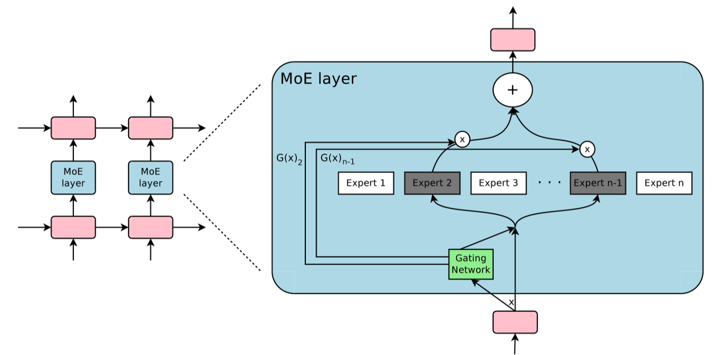

04.MOE 初遇 RNN(DONE)#
解读 by: 张晓天
混合专家模型(Mixture of Experts，MoE)与循环神经网络(Recurrent Neural Networks，RNN)的结合代表了深度学习发展史上一个重要里程碑，它为大模型训练提供了一种计算效率与模型容量平衡的创新范式。本节将系统梳理 MoE-RNN 架构的技术背景、核心设计原理、工程实现挑战及其历史意义，揭示这一技术如何为后续 Transformer 时代的 MoE 应用奠定基础。
背景与挑战#
AI 模型的规模扩张与计算效率之间的矛盾构成了 MoE-RNN 发展的核心背景。随着 2010 年代初期深度学习在各类任务上取得突破，一个被反复验证的观察逐渐成为共识：模型容量与性能上限呈正相关关系。在语言模型、机器翻译、语音识别等序列处理任务中，增加 RNN（尤其是其变体 LSTM 和 GRU）的参数量通常能带来更好的表现，这一现象在文本生成、音频处理等多个模态中均得到证实。
模型参数量与所需训练数据量之间存在的相互制约关系，使得传统密集模型的训练开销随着规模扩大呈平方级增长，形成了难以逾越的计算壁垒。
在这一背景下，条件计算(Conditional Computation)理念应运而生，其核心思想是根据输入特性动态激活网络的不同部分，而非传统的前馈全网络计算。MoE 架构本质上是一种精巧的条件计算实现，它通过两个关键创新解决了大规模 RNN 训练的困境：一是稀疏激活机制，每个输入仅触发少量专家子网络；二是动态路由策略，通过可学习的门控网络实现输入到专家的智能分配。这种设计使得模型总参数量可以突破性地增长，而实际计算成本仅与激活的专家数量而非总参数规模相关。
Google Research 在 2017 年发布的《Outrageously Large Neural Networks: The Sparsely-Gated Mixture-of-Experts Layer》标志着这一技术的成熟。该工作成功训练了参数量高达 1370 亿的 LSTM 模型，规模相当于当时典型 RNN 的 100 倍以上，而计算成本仅增加约 40%。这一成就的关键在于实现了真正的稀疏激活，克服了 1991 年原始 MoE 理论难以工程化的问题。值得注意的是，这一突破发生在 Transformer 架构兴起前夜，为后续大模型技术发展提供了重要的架构储备
稀疏激活的引入也带来了新的挑战：
训练 Batch Size 较少：MoE 层将全局 Batch Size 分割为专家专用子 Batch Size（比如模型的 batch size 是 32，一共有 16 个 expert，那实际上一次迭代平均每个 expert 只能分到 2 个训练样本），导致梯度估计方差增大、训练不稳定。虽然可通过专家容量因子（预留缓冲区）或梯度累积技术缓解，但显存与通信限制仍制约批量扩展。
动态路由的硬件适配：GPU 擅长并行矩阵运算而非条件分支，因此 MoE 采用门控网络（如 Top-K 噪声门控）实现参数激活控制，避免直接分支操作，但门控决策的动态性仍可能引发计算流水线中断。
训练数据量不足：要训大模型就需要大量的数据，让模型参数充分学习。在当时的背景下，大规模的 NLP 数据是比较缺的（如 Common Crawl 未普及）。当然如今数据集多了很多，特别是预训练数据，这个问题现在来看没有那么突出了。
损失函数的设计：如何使用合适的损失函数来训练模型，提升效果，并且使得模型的负载比较均衡，这是一个不容易解决的问题。
集群通讯问题：一个 GPU 集群的计算能力可能比设备间网络带宽的总和高出数千倍，因此设备间的通讯很可能成为训练效率的瓶颈。为了计算效率，就要使得设备内计算量和所需的通讯量的比值，达到相应的比例。
MoE-RNN 模型架构#
典型的 MoE-RNN 模型由三大核心模块构成：专家网络(Experts)、门控路由机制(Gating Network)和宿主 RNN 框架(Host RNN)。
层级结构#
在 Google 的 1370 亿参数实现中，专家网络采用多层 LSTM 结构，每个专家约含 6800 万参数，共计 2048 个专家；宿主 RNN 负责处理跨时间步的序列依赖，而门控网络则基于输入动态选择每步激活的专家组合

如上所示，其设计核心采用对称 LSTM-MoE-LSTM 结构：
底层 LSTM：提取输入的时序特征，生成上下文感知的隐藏状态
中间 MoE 层：接收 LSTM 输出，通过门控网络动态路由至专家网络
顶层 LSTM：整合专家输出并生成最终序列表示
专家网络（Experts）：每个专家为独立的前馈神经网络（FFN），参数量约 6800 万，专注于特定特征模式（如语法结构、领域术语）
这种设计实现了时序建模与条件计算的深度融合：LSTM 捕获长程依赖，MoE 提供动态容量扩展。
门控机制#
门控路由机制是 MoE 架构的"智能调度中心"，其设计经历了从简单到复杂的演进。
基础 Softmax 门控：对隐藏状态线性变换后应用 Softmax，生成专家权重分布。但输出稠密，计算成本高。
Top-K 稀疏化: 仅保留权重最高的 K 个专家（通常 K=1 或 2），其余置零，实现硬稀疏激活。尽管数学上导致门控函数不连续，但工程实践证实其稳定性（梯度裁剪可缓解突变）。
分层路由（Hierarchical MoE）：当专家数量＞1000 时，采用两级门控。
第一级：选择专家分组（如按语义域划分）
第二级：在组内选择具体专家
此结构将计算复杂度从 O(N)降至 O(√N)，类似 Word2Vec 的 Hierarchical Softmax 思想。
噪声注入与负载均衡#
负载不均衡是 MoE 的核心挑战，论文提出可学习噪声的软约束方案：
问题本质：门控网络易陷入“强者恒强”的纳什均衡——热门专家因训练充分更易被选中，冷门专家逐渐边缘化。
噪声机制：向门控输入添加高斯噪声：
\[ \tilde{g}_i = g_i + \epsilon \cdot \text{Softplus}(w_i), \quad \epsilon \sim \mathcal{N}(0,1) \]其中 \(w_i\) 为可学习参数，动态调节噪声强度。噪声迫使模型探索冷门专家，打破自我强化循环。
对比硬约束：早期方案（如专家容量上限）会直接丢弃溢出样本，损害模型容量；噪声注入则通过可微扰动实现负载均衡，兼顾效果与效率。
工程创新#
Google 的 MoE-LSTM 工程创新包括：
分布式训练架构#
1370 亿参数 MoE-LSTM 的训练需要创新的分布式策略。Google 团队设计了混合并行架构：数据并行处理批量分割，模型并行划分专家到不同设备，引入All-to-All 通信实现专家间的门控协调。这种设计使计算负载均匀分布到数千个 GPU，但带来了严峻的通信挑战——设备间网络带宽与计算能力的比值可能低至 1:1000，通信成为系统瓶颈。
优化措施包括：通信计算重叠，利用 GPU 异步特性隐藏延迟；梯度压缩，减少传输数据量；拓扑感知调度，将通信密集的专家放置在同一服务器内。这些技术使系统在 2048 个 GPU 上达到 82%的线性加速效率，为后续万亿参数模型奠定了基础。
内存与计算优化#
MoE-RNN 的内存墙问题尤为突出。虽然每次计算仅激活部分参数，但所有专家权重必须常驻内存。1370 亿参数模型仅参数就需数百 GB 存储，远超单卡容量。解决方案包括：分层参数交换，将闲置专家换出到主机内存；量化训练，采用 FP16 混合精度；专家共享，跨设备复用热门专家。
计算效率方面，GPU 对条件计算的天然不适配构成主要障碍。传统 RNN 的矩阵运算高度规则，适合 GPU 并行；而 MoE 的动态路由引入了不规则计算图。工程团队开发了专家内核融合技术，将分散的小专家计算批量为大矩阵运算，保持 GPU 吞吐量。这一创新后被广泛应用于 Transformer MoE 中。
总结与思考#
RNN 时代的 MoE 架构代表了 AI 模型扩展的一次重大突破。通过创新的稀疏门控设计和分布式训练优化，Google 团队成功训练了当时最大规模的神经网络模型，为后续发展奠定了基础。其核心思想——动态条件计算和专家特化——继续影响着当代大模型的设计理念。未来，随着硬件技术的进步和算法创新，MoE 架构有望在更复杂的任务和更大规模的模型上展现其潜力。